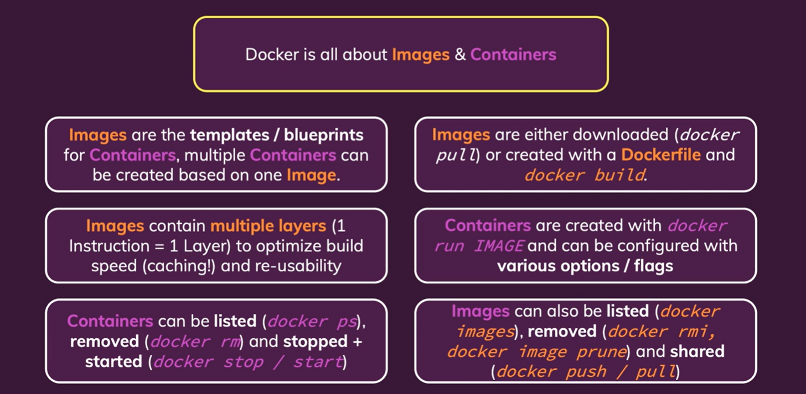

Images & Containers: The Core Building Blocks
- Build & Run basic image with Dockerfile
- Images are Read-Only
- Images Layers
- Attach & Detach Container
- Internative mode
- Remove
- More information about an image
- Copy file into & from container
- Name & Tag of Containers & Images
- Push image to DockerHub
- Summary
- Cheat sheet
Build & Run basic image with Dockerfile
FROM node:14
WORKDIR /app
COPY . .
RUN npm install
EXPOSE 3000
CMD [ "node", "app.mjs" ]
docker build -t getting-started:v1 .
docker run -dp 3000:80 getting-started:v1
Images are Read-Only
Nên là mỗi khi update code, application => create new image => run => container with new version of code
Images Layers
FROM node:14
WORKDIR /app
COPY . .
RUN npm install
EXPOSE 3000
CMD [ "node", "app.mjs" ]
-
Với cái Dockerfile như trên nếu chúng ta build lại image mà không thay đổi code => nó có cache để không phải chạy lại. Tuy nhiên khi mà ta đã thay đổi code thì nó sẽ chạy lại các instructions kể từ chỗ đã thay đổi đến hết.
-
Do đó để save time, ta sẽ làm như sau với case này:
FROM node:14
WORKDIR /app
COPY package.json .
RUN npm install
COPY . .
EXPOSE 3000
CMD [ "node", "app.mjs" ]
Attach & Detach Container
Attach
docker attach <id-name>
trường hợp cần thêm thông tin từ việc chạy docker => attach hoặc dùng docker
Detach
docker run -p 8000:80 -d <id-name>
If you started a container in detached mode (i.e. with -d), you can still attach to it afterwards without restarting the Container with the following command: docker attach CONTAINER
Internative mode
Example:
from random import randint
min_number = int(input('Please enter the min number: '))
max_number = int(input('Please enter the max number: '))
if (max_number < min_number):
print('Invalid input - shutting down...')
else:
rnd_number = randint(min_number, max_number)
print(rnd_number)
Dockerfile:
FROM python
WORKDIR /app
COPY . .
CMD ["python", "rng.py"]
Nếu run bình thường ta sẽ không thể tương tác, input vào được do đó ta cần 2 options:
-i, --interactive Keep STDIN open even if not attached
-t, --tty Allocate a pseudo-TTY
option -i => cho phép stdin, -t giả lập => terminal để tương
Remove
- Chỉ được xóa container mà đã stop
docker rm CONTAINER
- Chỉ được xóa image mà không được dùng ở bấn kì container nào
docker rmi
docker image prune
-
Sẽ xóa toạn bộ các image không sử dụng
-
Thêm option -rm => vào docker run thì container sẽ được xóa khi bị stop 1 cách auto
More information about an image
docker image inspect IMAGE-
Copy file into & from container
docker cp source CONTAINER-NAME:dest
Name & Tag of Containers & Images
- Thêm option --name trong câu lệnh docker run:
docker run -p 8000:80 -d --name NAME IMAGE-NAME:TAG
- Thêm option -t để gắn tag cho image, chính là version:
docker build -t abc:v2 . docker run -p 8000:80 -d --name NAME IMAGE-NAME:TAG
Push image to DockerHub
- Đầu tiên cần tạo repo ta có repo-name
- Để push được image lên DockerHub ta cần image đó phải có tên là username-of-DockerHub/Repo-name
docker tag image-name username-dockerhub / repo-name-on-docker-hub : version
➜ python-app-starting-setup ⚡ 17:17:13
▶ docker images
REPOSITORY TAG IMAGE ID CREATED SIZE
abc v1 17b72ac3e71d About a minute ago 1.02GB
➜ python-app-starting-setup ⚡ 17:17:58
▶ docker tag 17b72ac3e71d hjn4/udemy-docker-learn:v1
➜ python-app-starting-setup ⚡ 17:18:03
▶ docker images
REPOSITORY TAG IMAGE ID CREATED SIZE
hjn4/udemy-docker-learn v1 17b72ac3e71d About a minute ago 1.02GB
abc v1 17b72ac3e71d About a minute ago 1.02GB
➜ python-app-starting-setup ⚡ 17:18:05
▶ docker push hjn4/udemy-docker-learn:v1
The push refers to repository [docker.io/hjn4/udemy-docker-learn]
eae17a074db1: Pushed
2b9b1a0059f9: Pushed
d08e8c3991bb: Mounted from library/python
00fdc842d356: Mounted from library/python
a2ad80a8ed2e: Mounted from library/python
74ec933aa24e: Mounted from library/python
d43f876e6f21: Mounted from library/python
9f843c569746: Mounted from library/python
bcd354c940e1: Mounted from library/python
1dae5147cd29: Mounted from library/python
v1: digest: sha256:167a2de6abd3d4b0b231e33431fb4f40f8f744e6132b228e730c2fe3d53bf46e size: 2420
- Pull image from DockerHun
docker pull IMAGE:tag
Summary

Cheat sheet
- docker build . : Build a Dockerfile and create your own Image based on the file
- -t NAME:TAG : Assign a NAME and a TAG to an image
- docker run IMAGE_NAME : Create and start a new container based on image IMAGENAME (or use the image id)
- --name NAME : Assign a NAME to the container. The name can be used for stopping and removing etc.
- -d : Run the container in detached mode - i.e. output printed by the container is not visible, the command prompt / terminal does NOT wait for the container to stop
- -it : Run the container in "interactive" mode - the container / application is then prepared to receive input via the command prompt / terminal. You can stop the container with CTRL + C when using the -it flag
- --rm : Automatically remove the container when it's stopped
- docker ps : List all running containers
- -a : List all containers - including stopped ones
- docker images : List all locally stored images
- docker rm CONTAINER : Remove a container with name CONTAINER (you can also use the container id)
- -f: Can remove when container is running
- docker rmi IMAGE : Remove an image by name / id
- docker container prune : Remove all stopped containers
- docker image prune : Remove all dangling images (untagged images)
- -a : Remove all locally stored images
- docker push IMAGE : Push an image to DockerHub (or another registry) - the image name/ tag must include the repository name/ url
- docker pull IMAGE : Pull (download) an image from DockerHub (or another registry) - this is done automatically if you just docker run IMAGE and the image wasn't pulled before